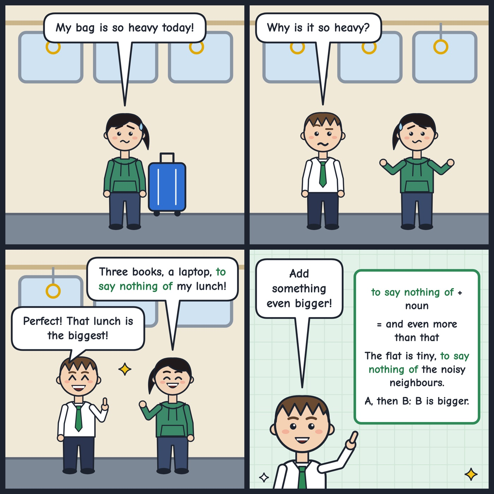

to say nothing of
Used to add one more thing that is even more extreme than the thing you just mentioned.
The flat is tiny, to say nothing of the noisy neighbours.
Tip: Use it after a complaint or problem to add a bigger one, followed by a noun phrase or -ing form (to say nothing of the cost / of paying for parking); don't use it for good news that isn't extreme.
Hear it in conversation
Workbook
1. What does it mean?
In this conversation, what does "to say nothing of" mean?
2. Fill the gap
Working from the café was a bad idea. The Wi-Fi kept dropping, the constant noise from the coffee machine.
3. Choose the best reply
Amira: I'm not moving into that flat. The rent is far too high, ...
4. Your turn: speak
Describe a trip or journey that was more difficult than you expected. What went wrong?
Show an example answer
Last year I took a night bus to visit a friend, and it was a disaster. The bus was two hours late and freezing cold, to say nothing of the seat that wouldn't stay upright. I arrived completely exhausted and slept most of the next day.
Answer key: to say nothing of
- 1. D. and also, which is an even bigger problem
- 2. to say nothing of
- 3. A. to say nothing of the long journey to work every day.
- 4. Example: Last year I took a night bus to visit a friend, and it was a disaster. The bus was two hours late and freezing cold, to say nothing of the seat that wouldn't stay upright. I arrived completely exhausted and slept most of the next day.
See it in a comic
